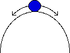

We illustrate this concept with the analogy of a marble rolling on a surface with friction.
Here the marble is stable: it rolls back to the middle position regardless of the direction in which it is moved.
Here the marble is metastable. Move the marble to the right and it goes farther away from the middle position. Move the marble to the left and it returns to the middle position. (We add friction into the model so the marble won't overshoot the middle on its return trip.)
This marble is unstable: it rolls farther from the middle position regardless of the direction in which it is moved.
|  |
Return to Wars